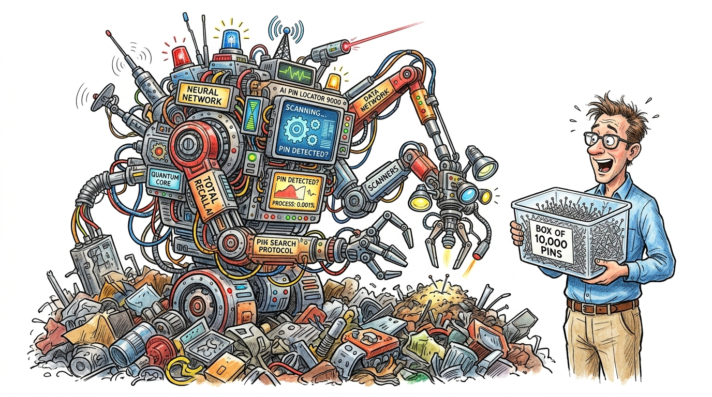

Foreword
The Strategic Bridge Between Algorithms and Boardroom Accountability

Over the past five years, billions of dollars in corporate capital have been deployed under the banner of Artificial Intelligence. Yet, if you walk through the executive suites of global Fortune 500 enterprises, an uneasy silence often follows when boards ask a simple question: "Where is the bottom-line ROI?"
Most technical literature treats AI as a mathematics or infrastructure problem. Business literature treats it as a visionary slogan. Almost nobody addresses the messy, high-stakes collision that happens when next-generation machine learning models collide with legacy IT architectures, siloed supply chains, and entrenched cultural resistance.
What Avik Das has accomplished in The Reality of Enterprise AI is both groundbreaking and urgently necessary. By adopting a graphic, narrative-driven comic format and anchoring every scene directly to the rigorous discipline of enterprise architecture (TOGAF ADM), this book gives business and technology leaders a common language. It demystifies the "Productivity Paradox" and proves beyond doubt that AI is not an experimental IT side-project—it is a strict fiduciary duty.
Whether you are a Chief Financial Officer allocating capital, an Enterprise Architect designing data pipelines, or a Risk Officer navigating emerging global standards like the EU AI Act, this book provides the indispensable map you need to survive on the asphalt.